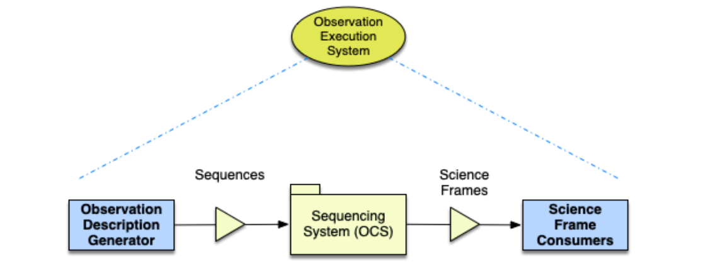
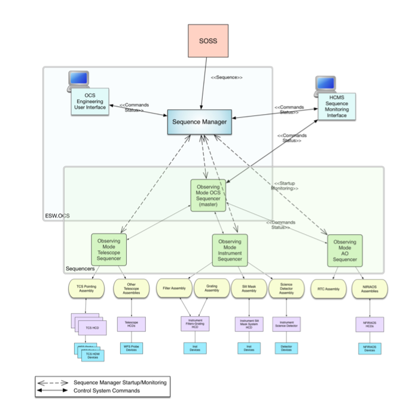

TMT Executive Software (ESW)
The functionality of TMT Observatory Software is provided by three Level 2 software subsystems in the Observatory Software Architecture of which ESW is one (the others are Data Management System, and Science Operations Support Software). ESW itself consists of five subsystems: ESW.OCS, Observatory Control System; ESW.UISTD, User Interface Standards, ESW.HCMS, High-level Control and Monitoring System; ESW.VIZ, Visualization System; ESW.ACQ, Acquisition and Observing Scripts. The ESW subsystems are largely independent, although ACQ does depend on OCS. However, the subsystems work together to provide the total functionality needed for OSW.
The OSW software architecture is split into the Technical Architecture and the Functional Architecture. ESW is part of the Functional Architecture that provides the software applications and components that implement the functionality of the observatory from the point of view of the users. It depends on and uses the Technical Architecture provided by the Common Software (CSW) subsystem. See CSW documentation here..
The ESW subsystems provide the core functionality needed to enable the TMT operations modes including: PI-Directed observing, Pre-planned Service Queue, and conditions-based queue scheduled observing. The ESW enables operation of all TMT subsystems from user interfaces or other programs. Sequencing is the term used to describe the operations the software system must do to coordinate control of the telescope subsystems and the instruments in the specific order needed to collect science data. The Observatory Control System (OCS) subsystem of ESW is the central engine that provides the sequencing functionality. The Sequencing System consists of one or more Sequence Components that are configured with Scripts to form Sequencers.

In this figure, a science-oriented description of an astronomical observation, as produced by a user interface program (such as an instrument acquisition user interface), planning tool, or database record is used as the input for sequencing. This input, as a Sequence, is passed to and accepted by the OCS, which creates and passes the observation description to the Sequence Components of the OCS. The Sequence Components and lower level control system software manipulate the hardware subsystems to generate science frames (made up of data frames and metadata). The science frames use the bulk data distribution functionality of the DMS and ESW.VIZ subsystem to distribute the science frames to dataset consumers (data processing or visualization, for instance).
The User Interface Standards subsystem (UISTD) of ESW includes user interface standards and reusable UI code solutions that enable local and remote use of user interfaces as well as common styles, conventions, and widgets that are shared across all user interfaces. The creation of specific observing user interfaces is the responsibility of the High level Control and Monitoring System (HCMS) subsystem. HCMS provides a consistent, unified experience across all tools and user interfaces built upon the standards and solutions of the UISTD package and the control and monitoring capabilities provided by OCS package and the technology choices of the CSW subsystem infrastructure.
The observer user interface for visualizing science frames during acquisition and observing (quick-look) is within the Visualization System (VIZ) package. VIZ also includes any infrastructure needed to support visualization of basic science images and wavefront sensor images as needed for acquisition such as image distribution and a platform for data processing.
Completing the observing workflow are support and scripts that implement observing and the acquisition process. Acquisition integrates almost every system of OSW, the telescope, and instrumentation. The Acquisition System (ACQ) package is a user focused package that implements the acquisition process for the observing sequences including known engineering observations. Acquisition-focused user interface tools will be included in ACQ as necessary based on how the observing workflows develop over the next few years.
Observatory Control System (OCS)
In the TMT Software System, OCS provides the sequencing software to carry out the observations planned and scheduled via software implemented by the Science Operations Support Subsystem (SOSS). Planning information created during Phase 2 and contained in the Observing Database, a part of SOSS, is used to generate the Observing Block and the Sequence, which is passed to the ESW OCS for execution. All observation types: science, calibration, and engineering are executed through the ESW.OCS infrastructure. This is necessary to have a full understanding of how the telescope and instruments are used for time accounting purposes. It is also expected that most if not all observations, including calibration and engineering, will be described using the SOSS planning tools.
ESW.OCS provides the Sequence Component, which is one of the OMOA architecture components (along with HCD, Assembly, Container, and Application). The Sequence Component is programmable by running a “script” that can vary based on the observing mode in use. The generic Sequence Component when configured with a Script becomes a Sequencer. Scripts are stored in a dedicated change-controlled repository. The configured Sequencer executes the Sequence by examining and processing each step of the Sequence and taking any actions needed to match the step such as sending commands to other components.
The Sequencer Component contains the environment for executing scripts called the Engine. It provides the “service glue” that allows the script code to use the CSW Services to send commands and subscribe to and react to event data.
For most observations (i.e. science, calibration, engineering), a master OCS Sequencer is used to control other subsystem Sequencers (such as TCS and IRIS), which in turn control subsystem Assemblies and HCDS in the OMOA hierarchy, as shown in the following figure. The scripts for science, acquisition, and some engineering purposes used by the OCS master sequencer are a product of ESW.ACQ.

OCS also includes a Sequence Manager application that acts as the front-end to the OCS sequencing system. The Sequence Manager receives Sequences from the SOSS or other tools, manages observatory resources, and starts, initializes, and stops Sequencers as needed for each received Sequence.
The following summarizes the responsibilities of OCS.
- Accept and execute Sequences submitted from SOSS in all operations modes.
- Manage the process of executing a single Sequence or multiple concurrent Sequences including starting any needed Sequencers.
- Ensure that the resources needed for a Sequence are available before allowing the Sequence to execute.
- Provide a reusable Sequence Component that executes Scripts and processes Sequences from SOSS.
- Provide a Script programming environment that provides access to appropriate CSW Services and has the level of control needed to execute acquisition, observing workflows, calibrations, and some engineering sequences.
- Allow an external user interface program to monitor and control the progress of an executing Sequence, and provide such tools.
- Define information needed for Observatory metrics (shared effort between OCS, ACQ, HCMS).
ESW Phase 1 Development
Planning for ESW led to the conclusion that the best approach was to split the ESW work into two phases. Resource limitations were one factor, but it is also necessary to focus initially on providing the decisions and parts of ESW on which other TMT subsystems depend as soon as possible, so that those subsystems can continue with their design work. Once these features are available, OSW future development is largely decoupled from other subsystems, and the other subsystems have what they need to plan and develop independently of OSW. The plan is to have an ESW Phase 2 final design in the future.
The following are the Phase 1 priorities:
- Sequencer/script design and integration with services
- Integration of the browser UI environment with CSW and early tool choices for UI development
- Define and implement Observe Events and the Observe command
Three main components are delivered as part of ESW Phase 1:
- Sequencer: This allows users to create a
Sequencercomponent. Both top-level Sequencer (OCS) and subsystem Sequencers can be created using the same framework. This allows subsystem experts to write custom scripts for each sequencer in a Kotlin-based domain specific language (DSL). All sequencer scripts will be written in the Sequencer Scripts Repository. - Sequence Component: The Sequence Component is used to spawn and shutdown sequencers dynamically.
- ESW Gateway: This is provided to give access to all CSW and ESW services and components from future browser-based user interfaces.
The first development phase of ESW Phase 1 has focused on the Sequence Component, Sequencer, and Scripts. The goal is to get feedback to guide further development in these areas. Additionally, the ESW Gateway is provided for testing. The Gateway provides CSW services focused on the needs of user interfaces.
Future development phases will focus on Sequence Manager, Observing Events and user interface support.
Executive Software (ESW) is a reimplementation/refactoring of the prototype ESW code here developed during the ESW design phase, with changes to make the code and public APIs more robust and resilient, and to improve its usability and performance for use at the TMT Observatory.